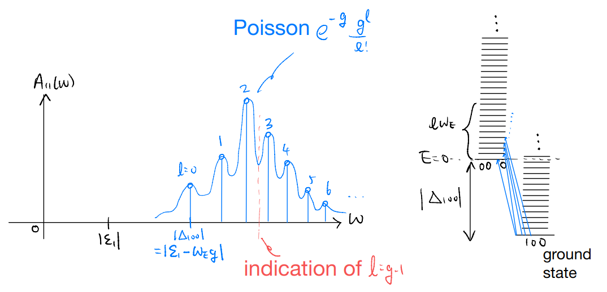

lec07
lec07¶
Note
This is NOT the official course PHYS5340 website yet!
If you are student in this course, always take the lecture notes as the correct one if you find any differences between lecture notes and website contents
If you are just passerby, use the materials below at your own risk. Since the website is still the first version (even alpha version), there could be some typos, incorrect/inaccurate/improper statements.
Note
All materials in this website are based on the course offered at HKUST
Note
As a “casual course”, we provide only general references but not specific ones to the materials introduced
Note
All materials’ copyright in this website are reserved for the course lecturer
If you want to use the material somewhere, you might need to contact the lecturer first
Note
Contribution is always welcome. if you find any typo, incorrect/inaccurate/improper statements or necessary references, do not hesitate to
raise an issue on github repo
make an pull request on github repo
contact me directly
20220225
Topics
Impurity spectral function: Einstein model and numerical experiment
Goals
First example of a physically interesting spectral function
Appreciating how to “extract” physical info from spectral function
Consider the state with one electron removed:
This is not an eigenstate of \(\hat{H}\)! The eigenstates should have been
Non-eigenstates means states with dynamics. So now we consider
But
We have
where the state in the bra and ket is the coherent state. This is just the “propagator” in the coherent-state basis!
Let’s define \(g_q=\left( \frac{M_{1q}}{\omega_q} \right) ^2\), then
To make further progress, consider again the Einstein model with
Let \(g=\sum_q{g_q}\), then
We can now consider the Fourier transform
and same as before we find the spectral function
The spectral function is the sum of delta functions. For which \(l\) do we get the highest weight?
increasing for \(l<g-1\), decreasing for \(l>g-1\)

Interpretation: when we try to remove an electron, we discover that in the ground state the “electron” is actually dressed by the phonons. With strong coupling (\(g\gg 1\)), the dominant spectral peak is far from the bare electronic orbital contribution of \(|\Delta_{100}|\).
Notes:
The Einstein model is simple by design, and enables very explicit computation of the frequency-space Green’s function (and hence spectral function). Our real-time solution, however, holds for more general phonon dispersion. When we deviate from the Einstein model we should start seeing deviation from the “sum of delta function” form of the spectral function
More interestingly, one should ask what happens for acoustic phonons which have \(\omega_q\to 0\) as \(q\to 0\). Recall the strength of the \(e-ph\) coupling was parameterized by \(g_q=\left(\frac{M_{iq}}{\omega_q}\right)^2\). If \(M_{iq}\) stays finite and \(\omega_q\to 0\), we have diverging coupling and hence energies etc.!
This is a rather general feature: low-energy modes are “dangerous” because they are easy to excite. In finding the ground state, one should, generally speaking, check how the “fluctuations” (lowest excitations) could destabilize the ground state. This amounts to a kind of self-consistency check. If the assumed ground state implies strong fluctuations which kills itself, the ground state does not actually “form”. This is the key physical picture behind the Merlin-Wagner theorem on the absence of spontaneous continuous symmetry breaking in low dimensions.
Now, back to our impurity-phonon problem: physically, the acoustic phonons have vanishing frequency in the long-wavelength limit because they are Goldstone modes. The Goldstones exist because of symmetries, and are correspondingly constrained by symmetries. In our context, the catastrophe is avoided by having a “derivative coupling”, such that the \(e-ph\) coupling has a momentum dependence of \(M_{iq}\propto q\) as \(q\to 0\). This gives a finite coupling strength as both \(M_{iq}\) and \(\omega_q\) vanish linearly in \(q\).
Note: play with the uploaded Python code if you want to explore what happens beyond the Einstein model.